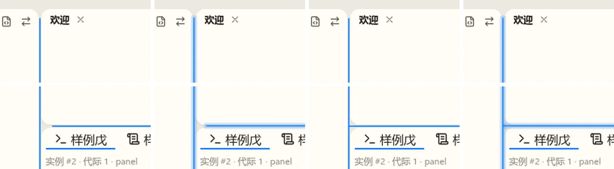
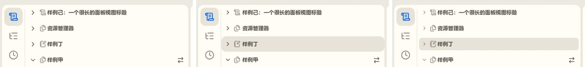
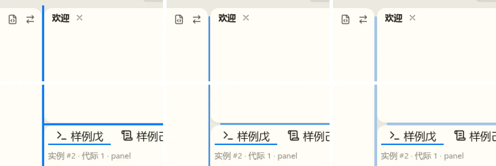
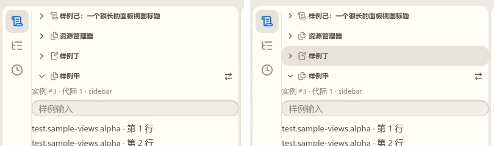
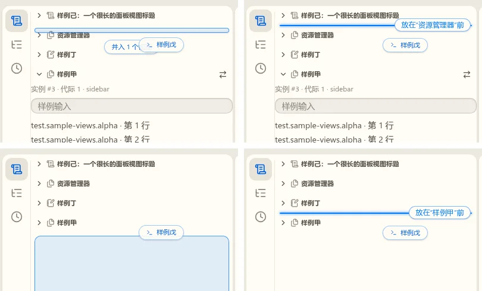
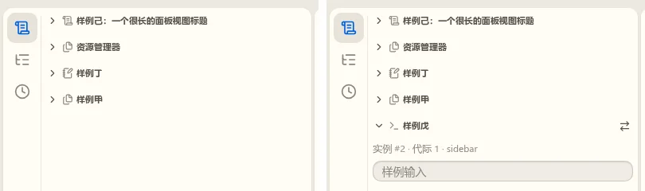
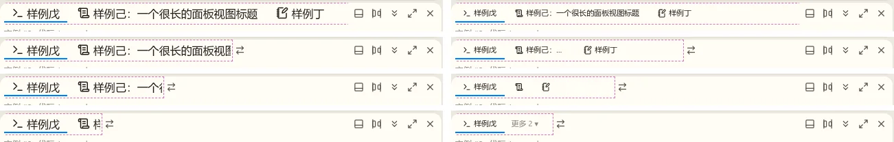

拖放与分栏：评审板
待定R3-1 默认主题的悬停线
R2-1 定了做成主题变量。默认主题按开发者给的几种做法两两组合：相交处断开或连着，实线或像输入框聚焦那样发光（发光直接用 --focus-ring，中间一条 1px 的强调色细芯）。四种都在窗体两端缩进 16px。

推荐“连着 + 发光”：两条线同时亮只发生在指针停在交汇处、一次会同时拖动两条边界的时候，连成 T 形正好表达“这里两个方向都能拖”；断开像两件不相干的东西。只亮一条时，它的两端都按自由端缩进。发光与输入框聚焦同源，主题换了聚焦光环它也跟着换。
待定R3-2 分栏标题行第二版

推荐右边。面板里收成的竖条同理：箭头 12px，悬停底色四周留 3px。
已定R2-1 拖动边界的悬停线（反馈第 1 条）
现在这条线是 nb-ui 写死的：颜色取 --accent-main，3px，沿交叉轴铺满整个分支，主题改不了。卡片外壳里它从窗体顶一直画到底，贴着卡片的圆角穿过去，所以突兀。

推荐 B，并做成主题变量：--nb-sash-line-color、--nb-sash-line-size、--nb-sash-line-inset、--nb-sash-line-radius，缺省等于现在的样子（macos 平铺不变）；nbook 卡片主题设成 B。C 在浅色下几乎看不出来。B 在两条线相交处竖线仍是直穿的，这一处不再细分。
已定R2-2 分栏的标题行（反馈第 2 条）

推荐右边：整行（除右侧动作区）点击就收起或展开，箭头只是状态标记；面板里收成 32px 的竖条同样整条可点、箭头 14px。键盘：标题行可聚焦，Enter 切换，空格仍是拿起拖动。拖动照旧，按住移动超过 6px 才算拖动，不会和点击冲突。
已定R2-3 往有收起分栏的容器里放视图（反馈第 3、4 条）


推荐：
- 收起的分栏不按半区算，按指针在它的前半还是后半，给“插在它前面或后面”的插入线；展开的分栏仍按半区并入。
- 全部收起时，标题之间、最后一个之后都是插入位；下面的空白区等于“插在最后”。
- 放下后新视图在插入线的位置、展开；其余收起的保持收起。份额：相邻有展开的栏就从它那里分一半，都收着就占剩下的空间。
- 面板里横排的分栏同理，插入线是竖线。
已定R2-4 右栏与面板的标签（反馈第 5 条）
字号偏大是 t81 修过的缺陷：标签写的是 text-[var(--text-xs)]，Tailwind 把它编译成了颜色，字号落回 16px（图标 18px）。t81 在分支 t81/nb-ui-fixes 上已经改好，还没合进 w00017 主线；合入后标签是 --text-xs（11px），和侧栏的容器标题一样。下面的建议稿按 11px 画。

推荐右边的顺序：先截断到 96px（保证收起前每个标签至少还能读出图标加四五个字），再变图标，最后进“更多”；选中的那个始终带标题。可选的另一种是变图标时连选中的也只留图标，标签带更省地方，但看不出现在是哪一组。做成 nb-ui Tabs 的通用能力，右栏与面板共用。
答复反馈第 6 条：样例甲与样例戊的内边距
不一致是声明不同：视图声明 layout，scroll 的由外框（WorkbenchViewFrame）包滚动区并统一加内边距（样例戊）；fill 的占满、自己滚动，外框不加（样例甲）。样例视图在 fill 时没给自己加，所以文字贴边。
我的看法：值由上层定，fill 视图自己用。scroll 的内容（正文、表单）照旧由外框加；fill 的视图（树、编辑器、终端）需要整行铺满（选中底色要通到边），不能由外框整体加，但外框把同一个值作为变量（例如 --view-inset）交给它，视图用在行内的左右缩进上，这样两类视图的文字起点对齐、值随主题。要不要这样改、放在哪个 Task，由你定。
答复反馈第 7 条：菜单系统
| 菜单 | 现在 | 能不能由插件或视图贡献 |
|---|---|---|
| 标题栏应用菜单 | 已做，四组 | 不能：工作台写死一份定义，只列命令 id；插件的命令加载了才出现，插件加不了新项 |
| 视图标题动作 | 已做 | 能：视图声明 actions，画成标题行的图标按钮（workbench/views.md 输出 10） |
| 视图的“…”更多菜单 | 没做 | 旧应用有（次要动作收进“…”）；新应用没有 |
| 右键菜单 | 资源管理器有自己的固定动作 | 不能：开放的 explorer/context 贡献点在 Spec 里写的是“随第一个消费者再做” |
| 标题栏与状态栏条目 | 已做 | 能（外壳四），放不下时收进“更多” |
建议另开一个 Task 设计“菜单贡献点”：一套位置（应用菜单的各组、视图标题与“…”、视图内的右键、编辑器标题等）、按命令 id 贡献、带分组与顺序和 when，先出设计稿再定范围。
已定第一轮剩下的几项（按推荐）
见 r1。第一轮的第 2、4、5 项被上面的 R2-3、R2-4 取代；还剩：
- 拖动时浮出预备区，覆盖所有没显示的侧栏、右栏、面板（缺省不显示、被隐藏、拖到零）。推荐：覆盖。
- 放进收起成标题头的面板时展开面板。推荐：展开。
- 标题栏按测量逐级让位，不写死宽度。推荐：照表。
- 放下后的过渡用“高亮滑到最终位置再淡出”。推荐：照 r1 第三节。
- 活动栏条目放不下时也收进“更多”。推荐：收。